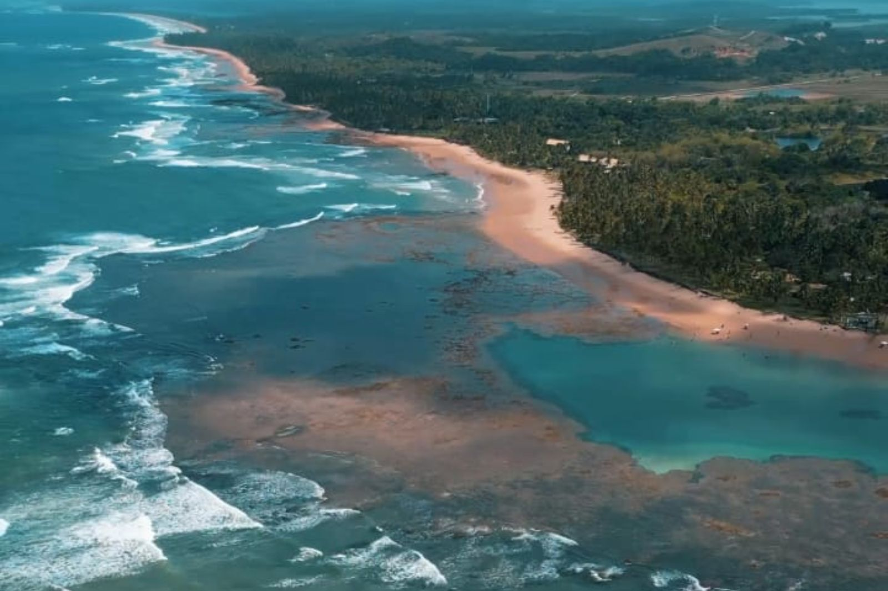
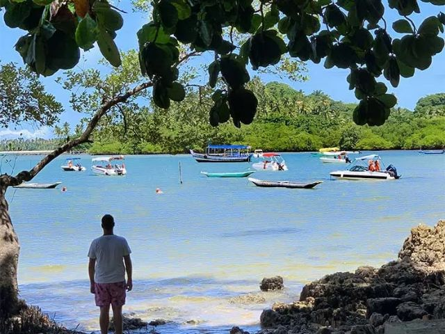
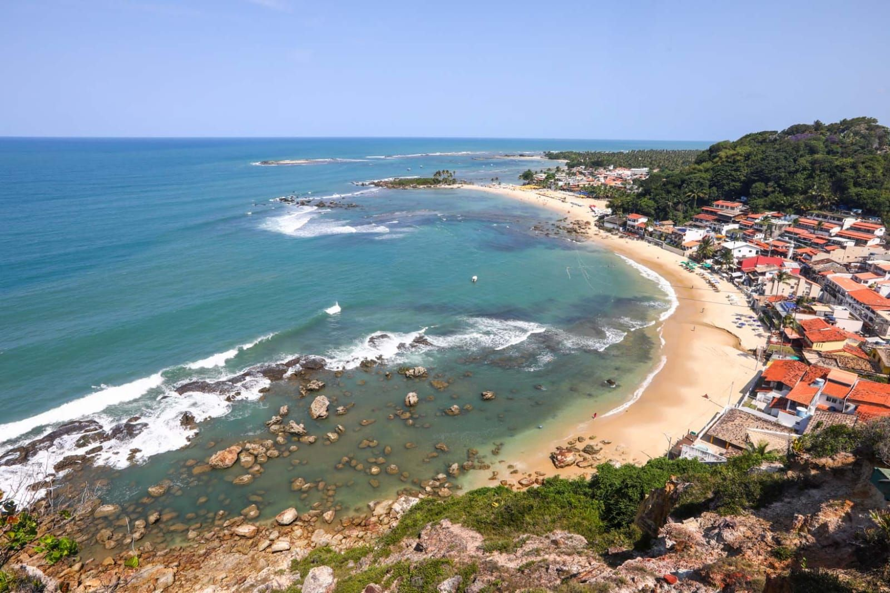

A partir de R$250



Passeio das Ilhas
Lancha rápida pela Baía de Camamu com paradas em Pedra Furada, Barra Grande, Goió, Campinhos e Taipu de Fora em períodos favoráveis.
Saída 07h20
Lancha rápida
Retorno previsto 18h